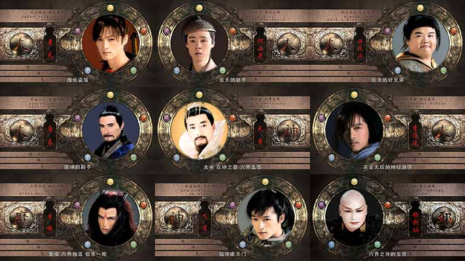
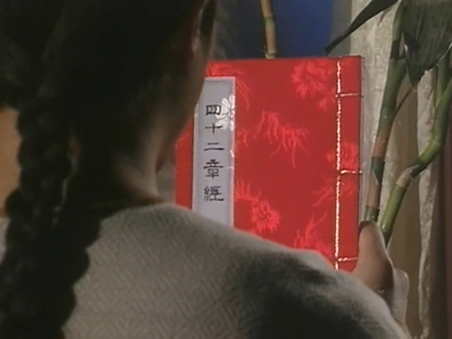
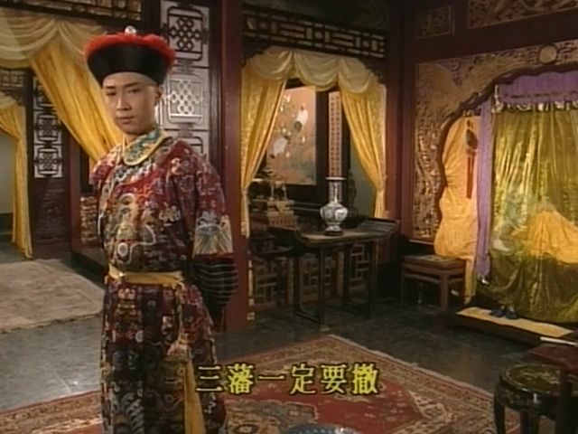
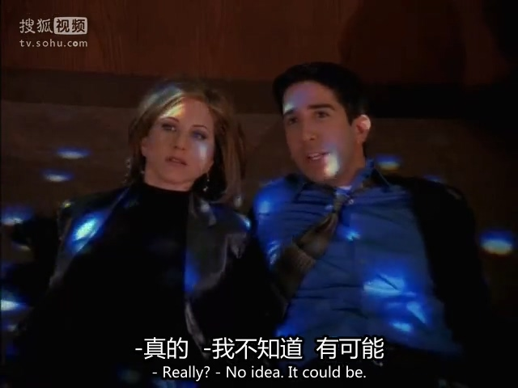
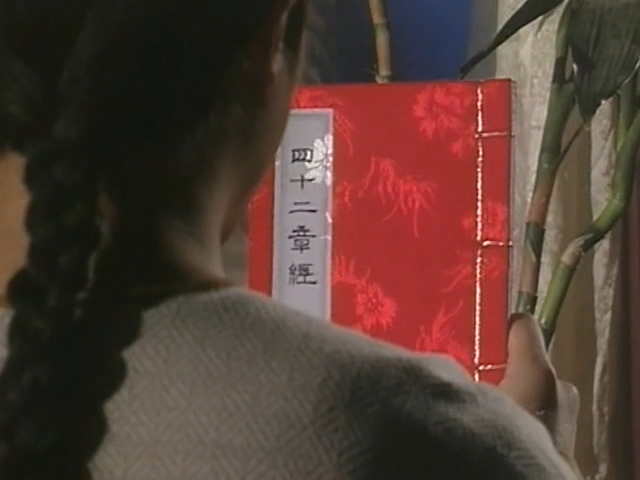
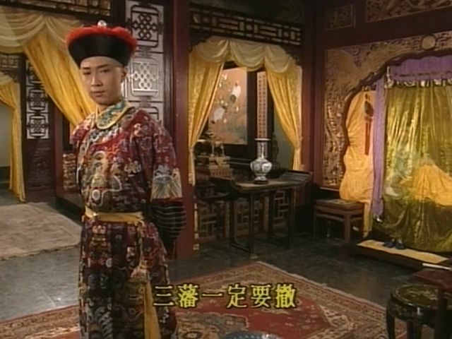
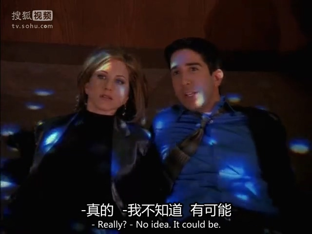

仙剑奇侠传1 <折叠> 仙剑奇侠传3 <折叠>  庆余年 西游记TVB版（张卫健） 御前四宝 鹿鼎记（1998，陈小春）   老友记  地球脉动（2006，BBC） 《详情》 天地传说之宝莲灯 天龙八部（1997，黄日华版） 天下第一 我这一辈子（张国立） 乌龙闯情关
鹿鼎记（1998，陈小春）  
老友记 
[更多资源www.wangpanwu.com].flv_20220825_204251.523.jpg)